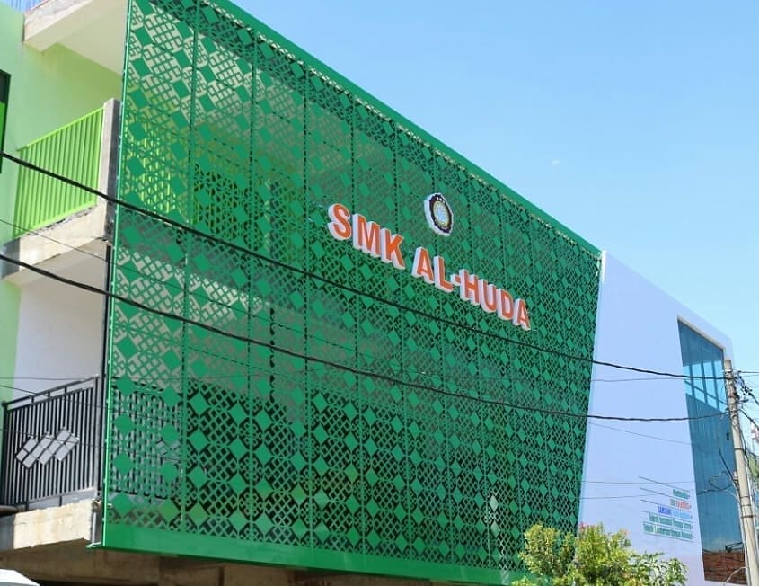

Informasi Akademik Terbuka
Pantau Perkembangan Murid
Halaman transparan bagi orang tua, wali murid, dan Murid untuk memantau rekapitulasi kehadiran, grafik nilai, serta jurnal kegiatan sekolah secara real-time.
Persentase Kehadiran Murid (Global)
Bulan Ini
Hadir (H)
92%
Izin / Sakit (I/S)
6%
Tanpa Keterangan (Alpha)
2%
Grafik Ketuntasan Nilai Semester
Akademik
Sangat Baik (Nilai ≥ 85)
45%
Baik / Tuntas (Nilai 75 - 84)
45%
Perlu Remedial (Nilai < 75)
10%
Pantau Rekap Nilai & Absensi Siswa
Pilih tingkat, jurusan, dan rombel, atau ketik nama/penggalan nama/NIS untuk mencari data siswa dari database.
Hasil Pencarian Data Siswa: